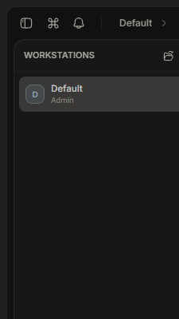
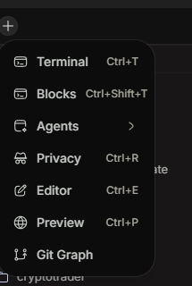
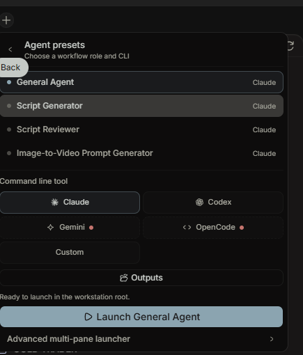
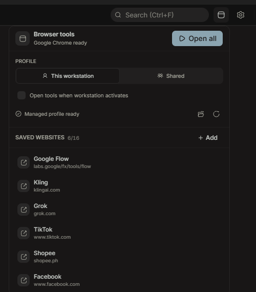
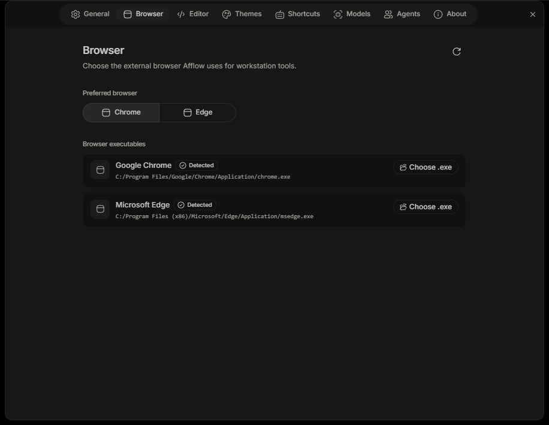

How to use Afflow workstations, agent presets, and isolated browser tools for an affiliate content production workflow.
Afflow keeps Terax's terminal, editor, file explorer, Git tools, and built-in AI surfaces. The additions turn that baseline into a persistent production workspace for affiliate content.
Use a location such as Documents\Afflow Workspaces\Fit Check. Avoid using your whole home folder as the long-term workstation root.
The plus creates and scaffolds a workstation. The folder icon opens an existing workstation.
Afflow adds the standard folder tree and a minimal workstation.json. Existing prompt files are preserved and never overwritten.
Each row retains its own active files, terminal definitions, saved websites, profile mode, agent choices, and layout.

The Workstations rail. Use the plus to create, the folder to open, and a row to switch.

Click the tab plus, then select Agents.

Choose a role and a detected command-line agent, then launch it in the workstation root.
| Preset | Use it for | Expected result |
|---|---|---|
| General Agent | Research, file organization, planning, and one-off work. | Work completed inside the active workstation. |
| Script Generator | Short-form affiliate scripts from verified product facts and audience notes. | Hook, scenes, on-screen text, voice-over, CTA, and claims to verify. |
| Script Reviewer | Risk review before production, especially health and wellness content. | Risk level, line findings, required revisions, and a safer version. |
| Image-to-Video Prompt Generator | Turn a source image and approved script into a tool-specific motion prompt. | Main prompt, negative prompt, motion notes, continuity risks, and conservative alternate. |
Ctrl+D or Ctrl+Shift+D, focus the new pane, choose a preset, then select Focused pane. For a new role, select New preset, enter its name, and paste the complete prompt.md content.New Tab > Agents is the added workstation workflow launcher. Settings > Agents is Terax's global inline AI persona configuration.
Browser tools launch external websites. Afflow does not embed a browser and does not inspect page contents.
Click the browser icon beside Search and Settings.
This workstation isolates website sessions for the current niche. Shared reuses one Afflow profile across workstations.
Use the saved Google Flow, Kling, Grok, TikTok, Shopee, and Facebook launchers, add your own, or click Open all.
The managed profile is separate from your normal Chrome or Edge profile. Sign in once for that Afflow profile, subject to each website's session policy.

Open the gear icon, then select Browser. This Windows machine currently detects both Chrome and Edge.
Select Chrome or Edge as the preferred browser. Afflow uses the detected executable and opens a normal external browser window.
Use Choose .exe only when auto-detection misses a valid installation. Afflow validates the selected browser executable again before launch.
Put product facts in products, source material in references, and research notes in research. Keep claims tied to a source.
Launch Script Generator. Specify platform, niche, audience, duration, language, tone, and the exact source files to use. Save the result under scripts.
Launch Script Reviewer against the saved script. Resolve unsupported claims and save the approved revision.
Place source images in images and audio in audio. Launch Image-to-Video Prompt Generator with target tool, duration, and aspect ratio.
Use Browser tools in This workstation mode. Open Flow, Kling, or Grok and upload the prepared media manually.
Download completed media to videos. Keep publish-ready exports and final documents in outputs.
Use TikTok, Shopee, or Facebook launchers for manual review and publishing. Afflow does not auto-post or bypass platform controls.
Save edited files before closing. Afflow checks for dirty editors and active terminal work, persists the workstation state, and restores it on the next start.
scripts/2026-08-25-product-angle-v01.mdvideos/2026-08-25-product-angle-9x16-v01.mp4outputs/2026-08-25-product-angle-approved/| State | Windows today | Across PC and Mac later |
|---|---|---|
| Saved workstation files | Local Kept in your selected folder. | Planned End-to-end encrypted file sync. |
| Workstation name, order, tools, layout, saved tabs | Restored Local persistence and crash recovery. | Planned Portable declarative state. |
| Terminal sessions and running processes | Restored cold as definitions, not as live processes. | Never migrated live between devices. |
| Browser profile and sign-in | Local Afflow-managed directory. | Never synchronized. Sign in independently on each device. |
| CLI credentials and secrets | Stored by the CLI or OS credential store. | Never synchronized by Afflow. |
workstation.json contains identity and creation metadata only. It contains no cookies, tokens, process handles, or passwords.New Tab > Agents and launch Script Generator with Claude.scripts, then open it in Afflow.| Agent unavailable | Install or authenticate the CLI, ensure its executable is on PATH, then reopen the Agent presets panel. |
| Prompt missing | Check the matching file under agents. Re-running scaffold is safe and preserves existing files. |
| Browser not detected | Open Settings > Browser, refresh detection, or choose the exact Chrome or Edge executable. |
| Profile reset refused | Close every window using that Afflow profile and retry. Unknown activity is intentionally treated as unsafe. |
| Workstation folder moved | Use the workstation relocation action to reconnect the saved workstation to its new root. |
| MacBook continuation | Until Afflow Cloud exists, move saved workstation files manually. Browser and CLI authentication must remain separate. |